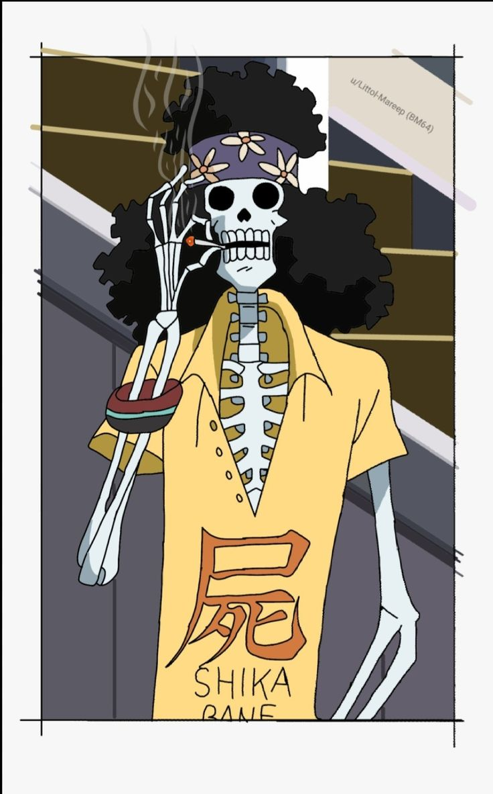

Ingénierie de la performance
Planification d'entraînements, suivi de charge, adaptation en altitude et accompagnement vers les filières d'excellence (Pôles Espoir, lycées sportifs).
Master 2 EOPS — Altitude & Performance
J'articule l'encadrement de terrain (judo, sports de montagne, gestion de collectifs) et la rigueur scientifique (psychométrie, analyse quantitative, optimisation de la performance) pour accompagner les athlètes et structurer les projets fédéraux.

Domaines d'intervention
Planification d'entraînements, suivi de charge, adaptation en altitude et accompagnement vers les filières d'excellence (Pôles Espoir, lycées sportifs).
Conception de protocoles d'évaluation, traitement statistique, modélisation par régression et analyse de l'activité réelle en combat pour objectiver la prise de décision.
Gestion budgétaire, logistique matérielle, coordination d'équipes sous pression et organisation de manifestations sportives d'envergure universitaire.
Encadrement éducatif de publics jeunes (minimes à cadets), transmission du code moral, arbitrage, prévention des risques et sécurisation de sites aquatiques et montagnards.
Production scientifique & méthodologie
Glissez de droite à gauche ou utilisez les flèches pour parcourir mes études reliant psychologie de la performance, données empiriques et réalité du terrain.
Expériences professionnelles
Cursus académique
Qualifications & Pratique
Échange & Recrutement
Disponible pour échanger autour de missions d'accompagnant à la performance, que ce soit dans le management d'une équipe sportive, ou l'élaboration d'un projet sportif.